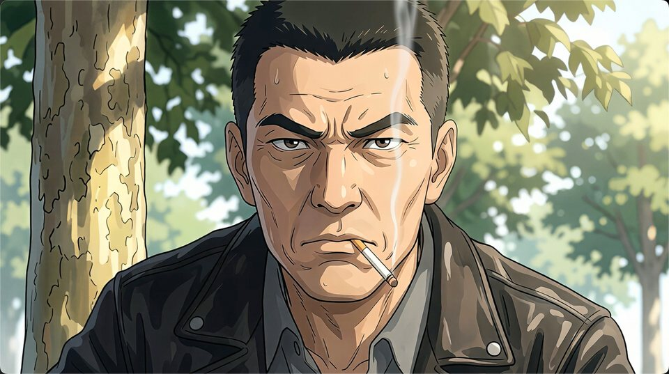
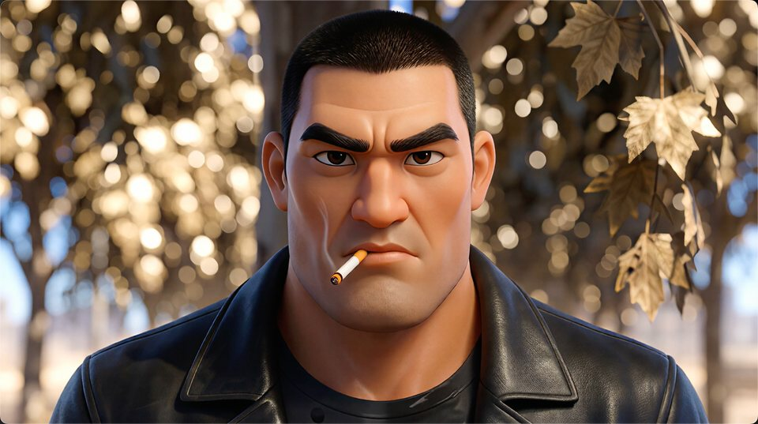
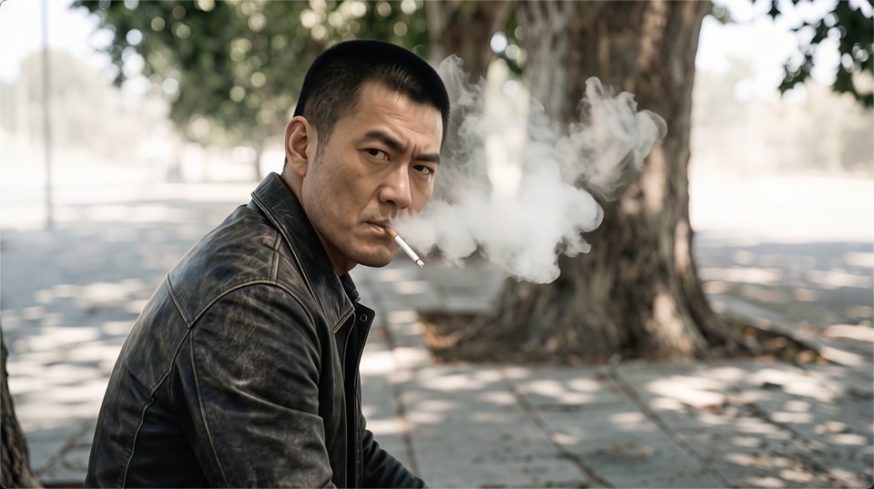

Turning novels into films by
modeling a dynamic cinematic world
FilmWorld reframes narrative long-video generation as Dynamic Cinematic World Modeling — first constructing a stateful, persistent world from prose, then evolving it causally scene by scene.
See FilmWorld in action
A quick look at films FilmWorld generates automatically from a short novel — here, 华强买瓜 · Huaqiang Buying Watermelons, rendered in a few different visual styles. Click any to watch.

Ghibli · Anime
Disney · 3D
Live-action · CinemaA novel is not a longer clip — it is an evolving world
Video models excel at short, single-scene clips. A film demands dozens of scenes where every character, location, and prop carries state forward. Two habits break down at this scale.
Independent per-shot synthesis
Each shot is generated alone with no cross-shot state. A character injured in scene 3 reappears unharmed in scene 9 — identity and continuity simply are not tracked.
Sequential extrapolation
Shots are rolled out one after another with limited context. Semantic drift compounds over long narratives, and latency grows linearly, O(N), with shot count.
A persistent, evolving world
We build one cinematic world grounded in the novel and evolve it through plot-driven state transitions. Every shot is just a view rendered from that world at a moment in time.
Dynamic Cinematic World Modeling
We formalize the cinematic world as a five-tuple. Every shot is a rendered view of this world; consistency becomes a structural guarantee rather than an emergent hope.
A plot event 𝒯(·, pt) advances the state; Φ maps it to a stable visual identity before ℛ renders the shot.
Six specialized agent groups, two phases
Modeling a cinematic world spans heterogeneous skills. FilmWorld coordinates six agent groups across a Construction side and an Evolution side.
Narrative Structured Translation
Segments the novel, resolves aliases and pronouns into canonical entities, and recovers cinematic details prose leaves implicit.
World Entity State Modeling with Visual Anchoring
Discretizes states, hashes them into identifiers Φ, and anchors each first appearance to a reusable reference asset.
State-driven Shot Planning
Materializes the full state trajectory and shot directives, chaining each shot's opening to its predecessor's end-state.
Parallelism through explicit state externalization. Because the entire state trajectory is materialized symbolically before any pixel is drawn, rendering carries no sequential dependency — the runtime-dominant Evolution Phase becomes constant-latency in shot count, a Θ(N) theoretical speedup.
See it on all 15 novels
Pick any source novel, read its opening in the original language or a translation, then compare the films inferred by FilmWorld against five agentic baselines.
The Necklace
How one novel becomes a world
Real assets from FilmWorld constructing The Necklace: entities are anchored to reference visuals, then states evolve into scene-level keyframes. Click any frame to enlarge.
FilmEval — nine metrics, three dimensions
15 novels across easy, medium, and hard tiers, scored by an automated multimodal protocol that jointly reads the source novel and the generated film.
Cinematic Presentation
Film-level production quality: is the output a coherent, watchable cinematic artifact?
Film Consistency
Do visual entities and environments stay coherent across shots and time?
Novel Fidelity
Is the film faithful to the source — no fabrication, sound logic, full coverage?
State of the art, stable across difficulty
Under a unified foundation stack and a shared Ghibli-anime style, FilmWorld leads every evaluation cell — and its advantage widens most on the hardest novels.
Overall FilmEval score
Six annotators rated all 90 films. FilmWorld ranks first in every difficulty–dimension cell, and the human ranking matches FilmEval exactly (Spearman ρ = 1.0).
| Method | Year | Easy | Medium | Hard | Overall | ||||||
|---|---|---|---|---|---|---|---|---|---|---|---|
| CP | FC | NF | CP | FC | NF | CP | FC | NF | |||
| MM-StoryAgent | 2025 | 81.53 | 84.40 | 78.49 | 77.47 | 81.22 | 74.44 | 80.47 | 87.70 | 78.88 | 80.51 |
| VGoT | 2025 | 83.27 | 86.93 | 76.82 | 80.33 | 87.72 | 82.37 | 80.00 | 87.99 | 72.74 | 82.02 |
| MovieAgent | 2025 | 77.27 | 84.28 | 85.88 | 78.93 | 87.07 | 86.62 | 81.73 | 89.43 | 84.63 | 83.98 |
| ViMax | 2026 | 83.13 | 87.66 | 78.48 | 76.27 | 85.94 | 78.61 | 78.73 | 87.60 | 73.55 | 81.11 |
| VideoClaw | 2026 | 82.27 | 86.15 | 84.22 | 81.67 | 88.34 | 82.15 | 80.53 | 88.12 | 84.28 | 84.19 |
| FilmWorld (Ours) | 2026 | 84.00 | 90.93 | 92.66 | 82.47 | 91.56 | 92.91 | 82.87 | 92.95 | 94.09 | 89.38 |
CP · Cinematic Presentation · FC · Film Consistency · NF · Novel Fidelity. FilmWorld stays within a tight ~1-point band across tiers (89.2 → 89.0 → 90.0), while baselines drop by up to 3.2 points as difficulty rises.
BibTeX
@article{zuo2026filmworld,
title={FilmWorld: Agentic Novel-to-Film Generation through Dynamic Cinematic World Modeling},
author={Zuo, Jialong and Zuo, Haotong and Zhang, Shiwei and Wang, Xiang and Li, Chen and Sang, Nong and Gao, Changxin and Bai, Xiang},
journal={arXiv preprint arXiv:2607.19038},
year={2026}
}